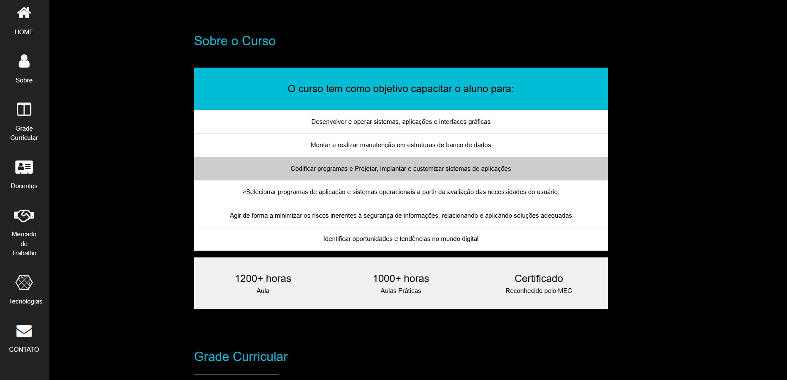
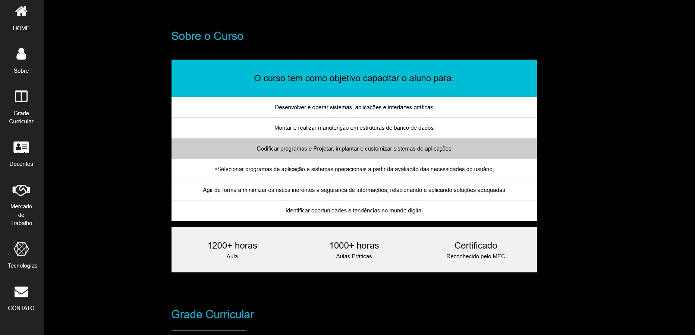

MINHA HISTÓRIA
MINHA HISTÓRIA

World of Warcraft: o Fenômeno que Revolucionou uma Geração
Dirigi, roteirisei, editei e participei do meu documentário — World of Warcraft: o Fenômeno que Revolucionou uma Geração — uma experiência completa de produção criativa e gestão audiovisual realizada em parceria com Activision Blizzard e Theogames.


 
